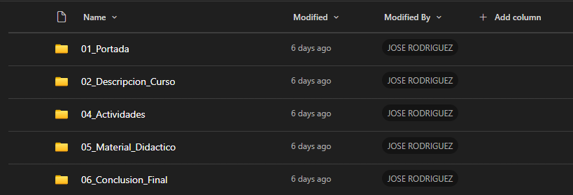

Generador de portafolio académico
Tu portafolio, sin el caos.
Genera la portada oficial, ordena tus evidencias por sección y descarga el ZIP final en el formato que pide la facultad. Sin cuenta, sin vuelta larga, sin carpetas mal nombradas.
- Sin cuentaEntras y lo usas.
- En tu navegadorNada se sube a un servidor.
- Límites claros10 MB por archivo, 160 MB por paquete.
La noche antes
1–2 horas de archivos sueltos.
Organizar el portafolio manualmente suele ser un proceso tedioso de renombrar carpetas, corregir portadas y buscar ese archivo que quedó en la carpeta de descargas.
Hecho en 5 minutos.
Con el generador, el desorden se convierte en un paquete listo para entrega.
- Tarea_1_final_final.pdf
- Parcial_corregido_v2.pdf
- Proyecto_FINAL_v3.pdf
- Lab_3_nuevo_este_si.pdf
- Conclusion_borrador.docx
- Captura_de_pantalla_1.png
- lab7_ahora_si.pdf
- Bibliografia.txt
- Tarea_final_REVISADA.pdf
- Proyecto_Grupal_v1.zip
- parcial2_final_ultimo.pdf
- Notas_de_clase.pdf
-
01
Portada repetida
Cada semestre, muchos estudiantes vuelven a recrear el mismo documento Word para la portada oficial, arriesgando errores en datos básicos.
-
02
Evidencias dispersas
Los archivos terminan repartidos entre descargas, WhatsApp y carpetas temporales, haciendo que la recopilación final sea caótica.
-
03
Estructura incierta
Un pequeño error en el nombre de una carpeta o en el orden de los documentos puede hacer que el paquete se sienta poco profesional.
Cómo funciona
Cuatro pasos, uno detrás del otro.
-
Datos del curso
La portada oficial recibe tus datos, el nombre del facilitador y el ciclo académico de forma automática.
-
Sube tus evidencias
Añade tus archivos en cada sección. No importa cómo se llamen: los nombres se limpian y cada uno queda en su carpeta.
-
Estructura lista
Visualiza cómo queda organizado tu portafolio antes de generar el paquete final. Todo en su lugar.
-
Descarga el ZIP
Recibe un archivo comprimido con el formato exacto que pide la facultad. Listo para entregar.
Prueba del resultado
La sazón está en lo que entregas.
No es una promesa abstracta: el generador convierte tus datos y evidencias en una portada, una estructura clara y un ZIP listo para revisar.

- Estructura validada
- El ZIP usa rutas numeradas y consistentes para portada, curso, actividades, material y conclusión.
- Local por diseño
- La portada y el ZIP se construyen en tu navegador. No hay backend, cuenta ni base de datos.
- Protecciones reales
- Se limpian nombres y rutas, se evitan colisiones y se bloquean extensiones ejecutables o de script.
- Código abierto
- El código propio está bajo la licencia MIT; las dependencias mantienen sus avisos.
Hecho para el flujo real.
ArmaPortafolio surge para simplificar la preparación del portafolio académico, reduciendo el tiempo y la fricción de organizar portada, evidencias y ZIP final en una estructura clara y consistente.
Directo y sin cuenta.
No necesitas registrarte. Entras al generador, completas los datos, añades tus evidencias y descargas el paquete final.